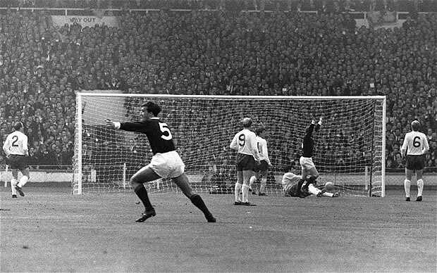
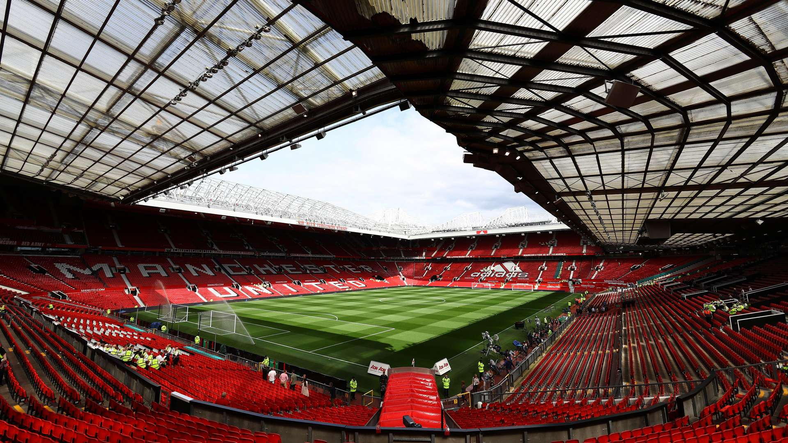
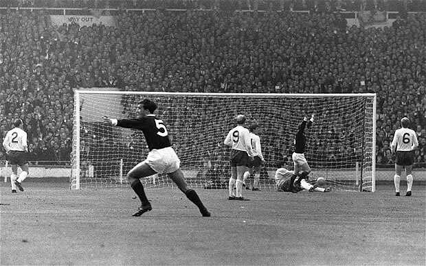
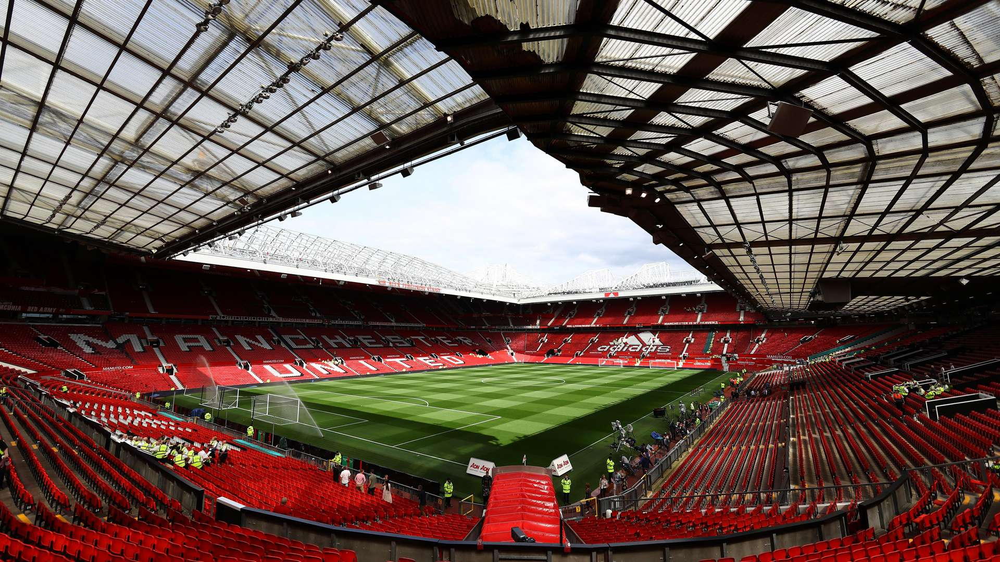

Futbol Nedir?
Futbol, dünya genelinde en çok oynanan ve takip edilen sporlardan biridir. On birer kişilik iki takım arasında oynanır ve amaç, topu rakip takımın kalesine göndererek gol atmaktır.
Futbolun Tarihçesi
Modern futbolun temelleri 19. yüzyılda İngiltere'de atılmıştır. 1863 yılında İngiltere Futbol Federasyonu’nun kurulmasıyla kurallar standartlaştırılmış ve futbol yaygınlaşmaya başlamıştır.
Zamanla Avrupa'nın diğer ülkelerine, ardından tüm dünyaya yayılan futbol, 20. yüzyılda FIFA'nın kurulmasıyla uluslararası düzeyde bir organizasyona kavuşmuştur.
Futbolun Günümüzdeki Yeri
Günümüzde futbol sadece bir spor değil, aynı zamanda büyük bir endüstri haline gelmiştir. Dünya Kupası, UEFA Şampiyonlar Ligi ve yerel ligler milyonlarca izleyiciye ulaşmaktadır.
Teknolojinin gelişimiyle birlikte VAR sistemi gibi yenilikler oyunun kalitesini artırmış; futbolcular, kulüpler ve ligler küresel markalara dönüşmüştür.
Futbolun Evrimi - Galeri
 



Futbolun Dönüm Noktaları
- 1863 – İngiltere Futbol Federasyonu kuruldu.
- 1904 – FIFA kuruldu.
- 1930 – İlk FIFA Dünya Kupası düzenlendi.
- 1991 – İlk Kadınlar Dünya Kupası oynandı.
- 2018 – VAR sistemi Dünya Kupası'nda kullanıldı.